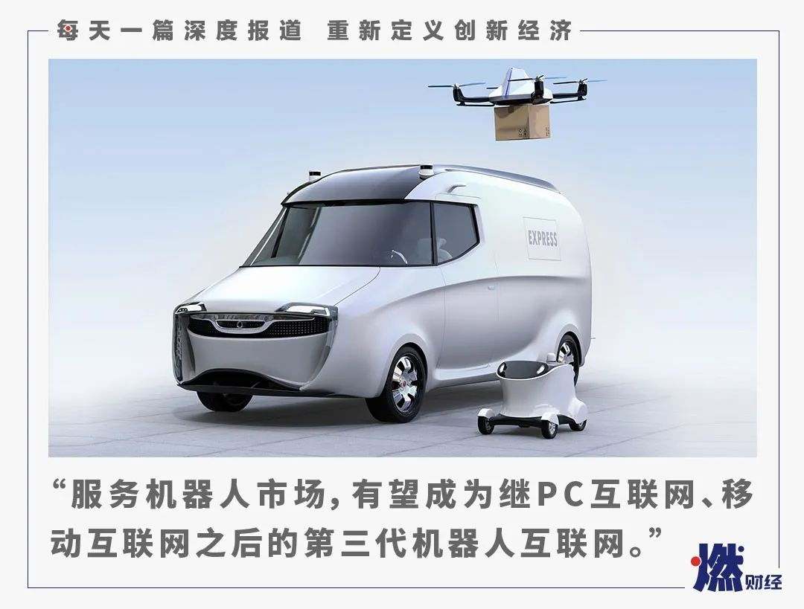

疫情之下，哪些AI技术正在爆发？
原文链接 备份链接 《创新经济战疫计划》，是燃财经在新型肺炎疫情期间推出的特别栏目，关注创新经济企业遇到的新难题、商讨应该采取的新对策，希望能够帮助中小企业一起战胜挑战、把握机会。 作者 | 苏琦 编辑 | 魏佳 2020年的这场疫情，时 …

燃财经（ID:rancaijing）原创
作者 | 孔明明
编辑 | 周昶帆
疫情之下，病毒肆虐，如何更安全地实现隔离，成了人们关注的重点。除了口罩、消毒液、护目镜等被抢断、线上电商订单激增之外，无人配送也在这非常时期被推至台前，进入到了大众视野。
大型突发危机来临时，无人能提前预知，但“黑天鹅”事件的发生却会给行业发展进程带来变化。
非典时期，SARS疫情促使京东完成了从线下到线上的决定性转变，阿里完成了从To B 到To C的决定性转变，“这次疫情一定会改变中国”，沄柏资本主席鲍毅认为，这次疫情会带来智慧革命的提速，人类会转向更智能化、更数字化、更充满智慧的方向去呼吸、去购物、去出行。
在疫情期间，大公司如京东、美团、苏宁、顺丰等派出了自己的无人配送机器人，许多创业公司如智行者、驭势科技等无人车公司也在疫情中发挥了作用。但无人配送作为一项仍待成熟完善的技术和应用，它真的能逐渐取代快递员、外卖员的位置，成为日常生活的新标配吗？如果是，我们还需要再等多久？
“如果把无人配送比作沙滩上的一块宝石，这次疫情在带来配送员队伍潮落的同时，也让这块宝石凸显出来”，苏宁物流研究所副院长栾学锋告诉燃财经，“从无人配送成熟曲线来看，这次疫情虽没能直接推动无人配送技术的进步，但间接将无人配送的遐想空间激发了起来，大众认知也被刷新。”
“在未来的5-10年间，肯定会是无人配送机器人成熟的时候”，栾学锋说。索道投资创始合伙人石东华则认为，具有互联网和To C属性的服务机器人市场，相当于手机市场+汽车市场+第三代互联网市场，有望在未来成为继第一代PC互联网、第二代移动互联网之后的第三代机器人互联网。
***疫情下的无人配送***
机器人无人超市项目星速购创始人姚锦程是在武汉1月23日封城的前一天开始感受到疫情的。
星速购是一家自己生产物流机器人的公司，同时也与酒店合作，在酒店内放置自己的无人货架并使用机器人进行配送。2019年10月份，星速购在厦门磐基希尔顿酒店试运营自己的无人配送机器人3个月后，正准备趁着春节，跟全国范围内的酒店开展合作。
得知疫情开始蔓延之后，姚锦程让公司员工采购了大批量口罩，并开始在合作酒店内为住客免费派发口罩，从1月23日到27日，陆续派发了近2000个口罩。
随着疫情越来越严重，酒店逐渐开始停业，星速购配送机器人合作的酒店无法继续开展业务，但姚锦程开始收到来自客户和朋友的邀约和建议。收治被隔离患者的酒店希望得到他们的捐赠，可以使用他们的无人配送机器人给住客派发生活物品，朋友则建议姚锦程将无人配送机器人捐赠给收治隔离患者的医院。
目前，星速购联合其他科技公司，已经向杭州萧山医院和厦门第一医院杏林分院捐赠了两台医务机器人，其中一台用来查房，另外一台可以送药和送物；同时他们也向武汉人民医院捐赠了同样的两台机器人。
2月6日，在武汉市青山区吉林街上，一台京东无人配送车从京东物流仁和站出发，顺利将医疗物资送到了武汉第九医院。武汉第九医院是武汉市收治新型冠状病毒感染肺炎患者的定点医院，是本次疫情核心区域的核心。京东物流武汉仁和站距离武汉第九医院只有600米，疫情爆发后，这个站点几乎支撑起了第九医院医疗物资的配送工作。
据京东物流武汉青山分区经理周建斌介绍，目前他在武汉青山分区管辖的8个快递站点，快递员到岗率仅60%，且很多小区采取了封闭措施。疫情爆发后，京东物流从北京紧急调配了两台L4级无人配送车到武汉，技术人员在北京通过云平台进行远程部署。
据周建斌介绍，目前京东无人车会先将第九医院对面三栋到四栋的小区订单筛选出来，快递员根据订单给无人车上货，最后再由无人车自动驾驶送货，每天根据下单量分几个拨次配载。目前一辆京东无人车有24个格口，同时可以放24单，每次送货的设定时间为20-30分钟，通过短信或者京东App通知用户取单，30分钟后无人车自动返程。
“货物这块根据实际情况分为大中小三类，如果货物超大放不了无人车，我们会选择人工去送，但一般情况下无人车都可以帮我们完成配送“，周建斌说。京东物流X事业部自动驾驶研发部负责人孔旗称，目前第九医院的订单每天约为10单到20单，无人车可以送到一半或更多，“如果解禁之后，小一点的生活用品基本都可以采用无人车配送，用户需要一个养成习惯的阶段。”
2月12日，一架顺丰无人机载着3.3公斤的医疗防疫物资降落在武汉金银潭医院，完成了武汉的首次配送；苏宁5G卧龙无人车也开始加码“无接触配送”。

苏宁5G卧龙无人车
来源 / 苏宁官方
2月18日，美团宣布了无人配送车“魔袋”在北京顺义等多个社区投入运营，将会为在美团下单买菜的用户提供配送服务。据美团官方数据显示，该无人配送车续航能力在100公里左右，一次最高能配送100KG的货物，在美团买菜的场景下每次可配送3-5个订单。

美团“魔袋” 来源 / 美团官方
除了无人配送车外，无人机也屡次登上新闻。比如公安会在高速路口或人群聚集区出动无人机实施空中巡逻震慑和督查，并实时回传画面，通过监控画面，操作人员可以及时劝导群众不聚集、戴口罩等；无人机的喊话器可以用来在道路或小区内播放防疫知识；还有无人机可以负责消毒、喷洒任务等。
疫情之下，线上电商订单激增、配送员人数不够、安全防范严格，虽然无人配送和智能机器人目前依然不能缺少人力协助，但仍缓解了部分人力紧缺和“接触传染”的压力，看似成为这一困境中的一剂“解药”。
***浮上水面的“宝石”***
“机器人在苏宁物流的场景里面一直都有应用，只不过借着疫情这次机会，机器人被凸显了出来，闪亮登场。“栾学锋说，自2018年以来，苏宁物流就开始在仓储、运输、配送等各个场景里面摸索各类机器人的应用。
在这个过程中，苏宁物流一直在做的事情是打磨测试机器人的稳定性，并没有急于铺开使用。“考虑到社会安全性和政府限制，我们沿着从点到线再到面的思路逐步铺开”，栾学锋介绍说，他们会在苏宁的办公园区，写字楼和苏宁小店配送场景下进行一些内部测试，锻炼机器人的能力，包括道路识别能力、异常情况诊断能力等，从而实现对配送场景的问题的持续挖掘和机器人控制技术的快速迭代。
周建斌称，在这次无人配送应用于武汉之前，他们已经在北京等地进行了近半年的实地派送测验，有了不少数据积累。他们在2019年年底的计划是，在2020年通过京东物流，选择一些城市和场景进行用户普及，疫情使得武汉优先级被提升，无人配送使用的紧迫程度也被提升。
“我们还有一些机器人的应用场景是送餐机器人，现在已经在一些餐馆开始使用，基于室内的配送技术我们也有相应的产品正在推进中”，孔旗说，“3月份我们会再继续投入，4月底我们会投入50辆，争取在今年实现投入到接近百辆的水平。“
从2016年开始，美团成立了W项目组，研发特定场景下的无人车配送，并在2017年将其提升为事业部。2018年，美团举办了无人配送开放平台发布会，这一平台基于智能调度系统、美团云、大数据以及数据安全体系，把无人配送技术开放给供应链的上下游企业，并给予运营、商家、销售方面的支持。同时，美团无人配送开放平台还联合擎朗科技、达闼科技等多家室内机器人公司，在酒店、餐厅等场景积极部署室内机器人，承担室内消毒、配送等服务工作。
2019年4月，美团成为国内第一家通过服务型电动自动行驶轮式车测试的企业，测试项目包括整车、配置、箱体、装配、自动驾驶能力等。2020年1月，在美国拉斯维加斯举行的2020年国际消费电子展（CES）上，美团和供应商法雷奥共同推出了车长2.80米、宽1.20米、高1.70米的无人配送车法雷奥eDeliver4U，每次行程最多可配送17份外卖餐食。

法雷奥eDeliver4U
来源 / 法雷奥官网
英诺天使基金合伙人祝晓成告诉燃财经，多年前他们已经开始关注工业机器人和民用机器人领域，从工业机器人领域投资开始，他观察到的是，“工业和民用领域的机器人都在发生非常大的变化，工业机器人国内目前已有多家上市公司，初创企业依然如雨后春笋，围绕机器人产业上下游的产业也非常活跃”。
*****噱头还是风口？*****
“这是一个比较慢的赛道，但这个市场早晚会来”，从2014年就已经开始关注到服务类机器人和人工智能硬件化的石东华说。
在祝晓成看来，通过行业内从业者们长期的努力，未来5年内，快递、物流、酒店等场景的无人配送机器人，电力等场所的巡检机器人，无人清扫机器人，无人农机等等会逐渐普及，但其他更复杂的应用场景，如医护、康复、佣人式机器人等仍可能需要10年以上的时间成熟并被广泛使用。
“这次疫情对机器人行业是一个催化剂，除了抗击疫情早日回归到正常工作和生活，大家也在思考，有没有机器人或者更智能的方式去代替或辅助人执行一些高危的工作？有没有更快更好的方法来研发药物和疫苗？”，祝晓成说，“这些都需要更多的技术研究和行业投入，也需要强需求的拉动；以前大家觉得医院来个机器人不一定好使，还会添乱，现在有强需求拉动，如果技术能快速迭代，产品化规模化做好，这些机器人场景和市场就会慢慢出现和成立。”
据IFR（International Federation of Robotics的简称，国际机器人联合会）2019年世界机器人报告显示，服务机器人在2019年销售额增长了32％，达到92亿美元，2018年销量增长了61％，达到271000多台，远高于2017年的168000台，增幅超过100000台。
服务机器人种类多，应用领域广，这导致服务类机器人在所有机器人销售份额中所占的比重，正在不断上升，目前已经接近整个市场的三分之一。在服务机器人领域，物流系统服务机器人销售量增幅最明显，2018年出售了近111000个，比2017年的69000个多出60％，其他如检查和维护机器人、医疗机器人也都有相当亮眼的成绩。

中国机器人市场需求
来源 / IFR、中国电子学会
但多位采访对象都表示，在目前通信、技术等各项条件的制约下，即便有疫情的催化作用，无人配送等服务类机器人要到成熟阶段，依然需要时间和客观条件的进一步发展，比如5G的普遍应用、技术的更加完善等。
“2020年的疫情对于人工智能行业，就如同非典加速了中国的电子商务发展一样”，姚锦程说，“人工智能算法、导航SLAM算法及5G通信等这些技术积累，最终需要被整合成一个应用，只不过需要合适的契机和场景的爆发点。我认为，服务机器人行业今年肯定会爆发。”
石东华认为，具有互联网和2C属性的服务机器人市场空间有望相当于手机市场+汽车市场+第三代互联网市场，是继第一代PC互联网、第二代移动互联网之后的第三代机器人互联网。
从中国的人口结构来看，出生率在慢慢下降，而现在的青少年已经在被各类人工智能产品所包围，“留给我们的时间最多只有20年，北京可能只有10年，我们必须推动机器人行业，让它们在各行各业中发挥作用，这也是我们应该担负的责任”，栾学锋说。
*题图来源于视觉中国。


你认为无人配送是噱头还是风口？
欢迎在评论区留下你的评论。我们会在点赞前三（超过20个，统计周期为7天）的评论里挑选一位网友，送出爱奇艺月卡一张。原创文章转载请点击公众号菜单“转载合作”。
一手资讯/硬核报告/每日红包/线下活动！就差你了！快加微信rancaijing01回复“读者”一键上车！


长按二维码向我转账
点个在看吧😘
受苹果公司新规定影响，微信 iOS 版的赞赏功能被关闭，可通过二维码转账支持公众号。
原文链接 备份链接 《创新经济战疫计划》，是燃财经在新型肺炎疫情期间推出的特别栏目，关注创新经济企业遇到的新难题、商讨应该采取的新对策，希望能够帮助中小企业一起战胜挑战、把握机会。 作者 | 苏琦 编辑 | 魏佳 2020年的这场疫情，时 …
原文链接 备份链接 燃财经（ID:rancaijing）原创 作者 | 闫丽娇 编辑 | 阿伦 疫情对各行各业都产生了巨大影响，尤其是在企业用工方面。由于人力严重不足，人力使用效率变得异常关键。更少的人意味着需要更敏捷、更高效的组织方式。 …
原文链接 备份链接 燃财经（ID:rancaijing）原创 作者 | 金玙璠 编辑 | 周昶帆 疫情下的“宅经济”带给很多行业新的机会。送粮油、送蔬菜、送防护用品，外卖小哥们奔波在各大城市的街头，维持着城市系统的正常运转。 中研产业研究 …
原文链接 备份链接 来源：雪球App，作者： 腾讯棱镜深网，（https://xueqiu.com/6718098612/141480733） @今日话题 作者 | 孙宏超 相欣 编辑 | 康晓 出品｜深网·腾讯小满工作室 编者按：通过中 …
原文链接 备份链接 2月20日是我虚岁50岁的生日。那天我在检查站的岗位上，妻子忽然打电话过来，说给我在电台点了一首歌祝我生日快乐。我一听，是我年轻时熟悉的郭富城的《对你爱不完》。 口述 | 胡军华 整理 | 王 煜 不知睡了多久，我醒 …